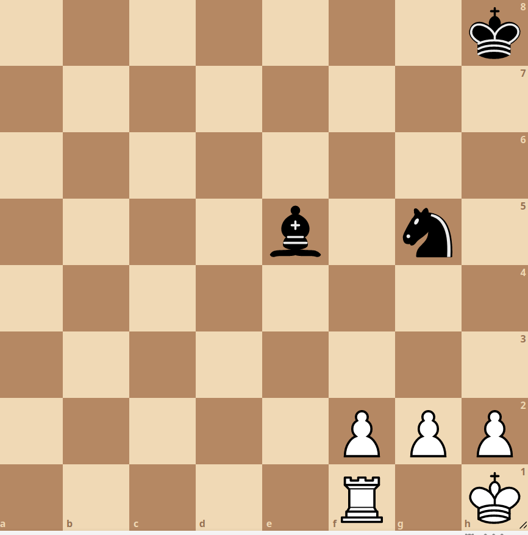

Uma forquilha de peões é uma tática em que uma peão ataca ao mesmo tempo duas peças do adversário. Isso coloca o oponente em uma situação difícil, pois ele deve escolher qual peça salvar, resultando na perda de pelo menos uma peça.
Vamos analisar um exemplo prático.
